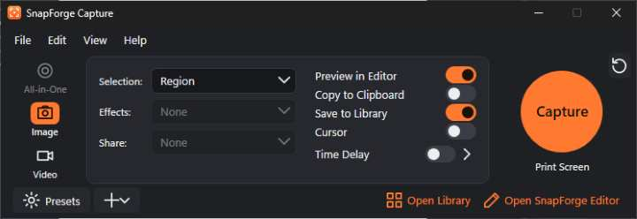
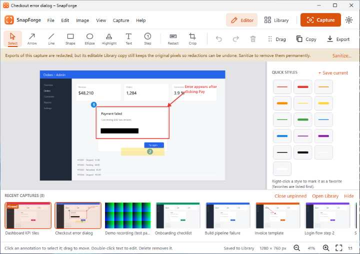
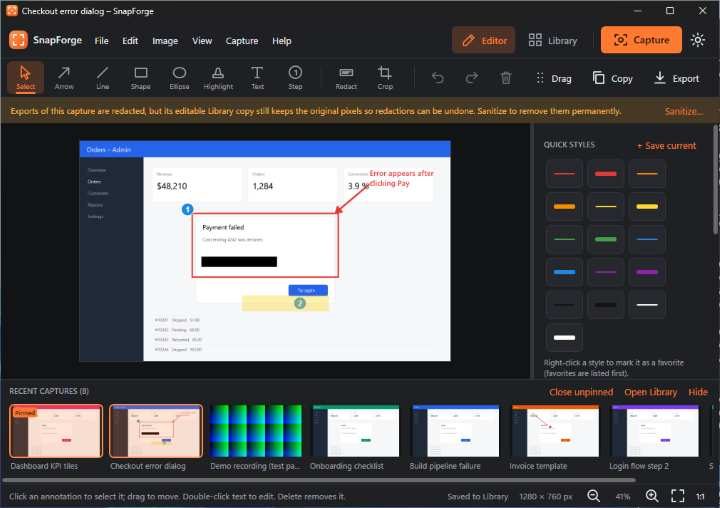
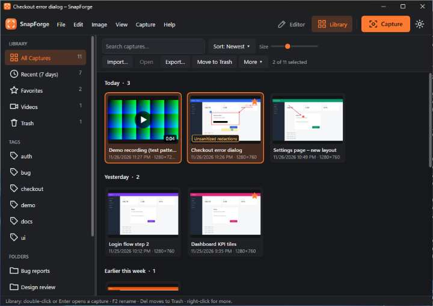
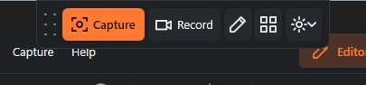
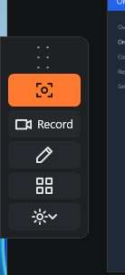
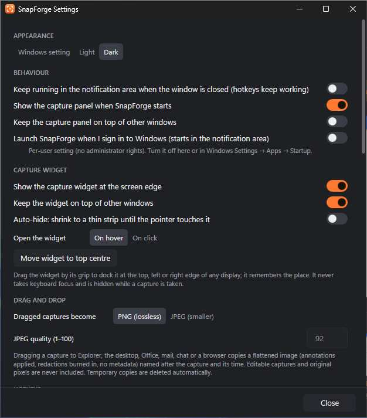
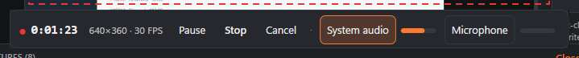
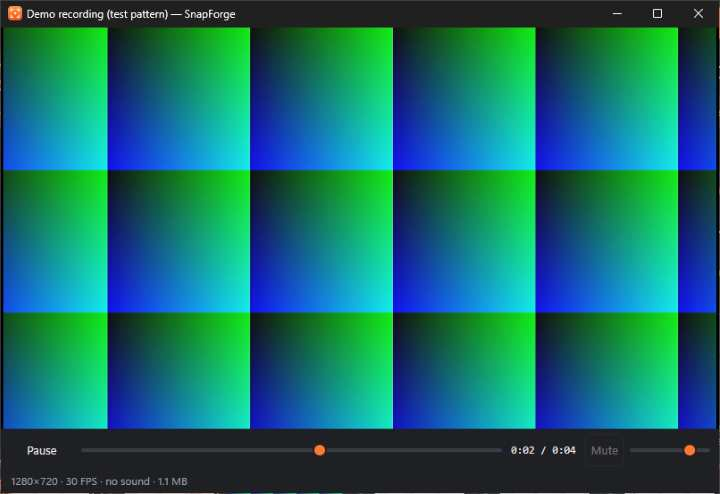
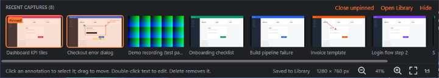

Features
Everything between the screenshot and the send button
Each feature shows its status. Nothing is in a public release yet; screenshots are from development builds with fictional demo data.
Capture Development build
- Region (it can span monitors), window, a single display or the full screen
- The screen freezes while you select, so menus and tooltips stay put
- Multi-monitor and mixed-DPI aware
- Delay countdown and mouse pointer on or off
- Presets with their own global hotkeys; Print Screen by default (configurable, conflicts reported)
- Copy to the clipboard, preview in the Editor, or capture without keeping a history

Annotate Development build
- Arrow, line, rectangle, ellipse, highlight, text and numbered step markers
- Quick Styles: save colour and thickness combinations, mark favourites
- Select, move, resize, recolour and edit annotations at any time
- Crop, zoom and fit; light and dark themes
- Undo and redo for every edit
- Save as PNG or JPEG, or copy to the clipboard

Redaction Development build
The Redact tool replaces the selected pixels with solid black and covers any annotations underneath. It does not blur or pixelate, so there is nothing to un-blur.
- Exported, copied and dragged images are flattened: they contain only the black box, with no hidden layer and no metadata.
- Your editable Library copy keeps the original pixels so you can still undo a redaction later. The Editor says so in a banner. Use Sanitize to remove the originals permanently.
- Redaction covers images only. Videos cannot be redacted.
Black boxes hide what is under them in the image itself; they cannot remove information that is visible elsewhere, such as in a file name you type or text outside the box.

Library Development build
- Every capture is saved automatically and stays editable (or turn the Library off)
- All, Recent, Favourites, Tags, Folders and Trash
- Search, sort, date groups and adjustable thumbnails
- Rename, duplicate, export several at once, sanitize
- Backup and restore, retention rules, storage usage, movable location
- Recent captures tray in the Editor: pin, reorder, persists across restarts
- Import PNG, JPEG and BMP files
The Library is stored in your Windows profile and is not encrypted by SnapForge; Windows device encryption or BitLocker protects it.

Desktop widget Development build
- A small tab at the top of the screen; hover or click to open it
- Capture, Editor, Library and your presets in one place
- Drag it to the top, left or right edge of any monitor; it remembers where
- Never takes keyboard focus from the app you are working in and hides itself during capture
- Optional auto-hide and launch with Windows


Drag and drop Development build
- Drag from the Editor's Drag button, the recent captures tray or the Library — one capture or several
- Arrives as an ordinary PNG (or JPEG) file named after the capture and the time
- Only flattened, redacted images without metadata ever leave SnapForge
- Temporary files are created only when the other app asks for them and are removed afterwards
- Drop PNG, JPEG or BMP files onto SnapForge to import them
Tested automatically with Windows drag-and-drop. Compatibility with specific apps (File Explorer, browsers, Office, Teams) is still being checked on real PCs.

Screen recording Experimental
Not approved for release. Screen recording is being reviewed on a separate development branch. It has been tested automatically on a cloud Windows machine without sound devices or a graphics card; testing on real PCs is pending.
- Video mode in the capture panel and a Record button on the widget
- Region, window or display to MP4 (H.264 video, AAC audio) using the encoders built into Windows
- 30 FPS by default, 60 optional; Standard and High quality
- System sound on and microphone off by default, switchable while recording with level meters
- Floating toolbar with elapsed time, Pause/Resume, Stop and Cancel; the toolbar and outline are kept out of the video
- Countdown, cursor on or off, hotkeys Shift+F9 and Shift+F10
- Videos in the Library with a player; recordings interrupted by a crash are recovered at the next start (the last second or two can be lost)
Windows shows its own capture border while recording, and its microphone indicator while the microphone is on. Videos cannot be redacted.


Private by design
- No network code: no uploads, sync, accounts, update checks or telemetry
- No administrator rights needed
- Captures stay in your Windows profile (or a folder you choose)
- Global hotkeys use the standard Windows mechanism — no keyboard hooks

Coming later Planned
Proposed for later versions and not started: trimming videos, saving a video frame as an image, animated GIF export, webcam picture-in-picture, drawing on screen while recording and cursor highlights. See the roadmap.